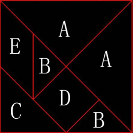

七巧原理： 一个正方形分割成七块( 大小三角形2个，中三角1个，小正方形1个，小平行四边形1个)，用这个七块可以拼成千变万化的图案。我们认知也是这样，抽象一个标准模型分割成若干模块，再用这些模块拼成原型
论语 是国人的日用常行的源代码。
知行合一：儒，大学之道在明明德，在亲民，在止于至善。道，观天之道，执天之行，尽矣。释，观自在菩提，行深般若波罗蜜多时，照见五蕴皆空，度一切苦厄。万法归源，知行合一，只有知道了照着做，才能至善，尽矣，度厄。
人心惟危，道心惟微，惟精惟一：人心是善恶莫测的，事理是现于细微的，始终如一精益求精才能安身立命。
T340520，人没有想象的那么毅力用功，没有世俗的激励，没有世俗的圈层，十年所做的多是废材。
T340523，G一润四，初命新业，不是重新开始，而是旧业自新。